上一章
家里有阳台，有次朋友给了我一些泥土及种子，我就开始种植物来了。她给我的泥土有不同的种子，还有野种子，要种出来才知道是什么。我觉得好神奇呢。小小一粒的种子，种出来各种各样美妙的东西。有次出门，她摘了一些薄荷来，我后来自己又买了几款不同薄荷种起来呢。
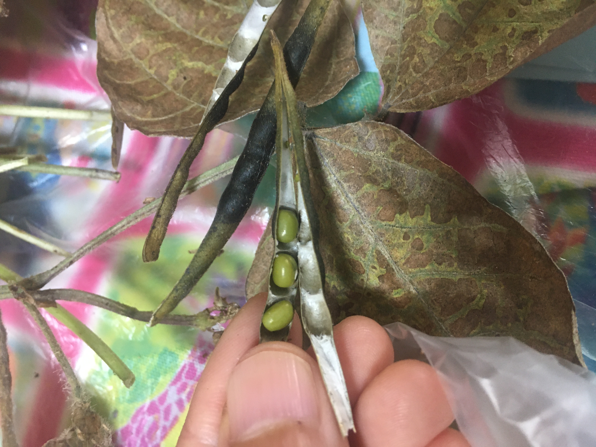
第一个上来的当然是绿豆！我年代的幼儿园学生都种绿豆的，我很怀念。以前在香港也种过，每次都种到出豆。一粒小绿豆可以变成十几粒绿豆，真的很神奇。
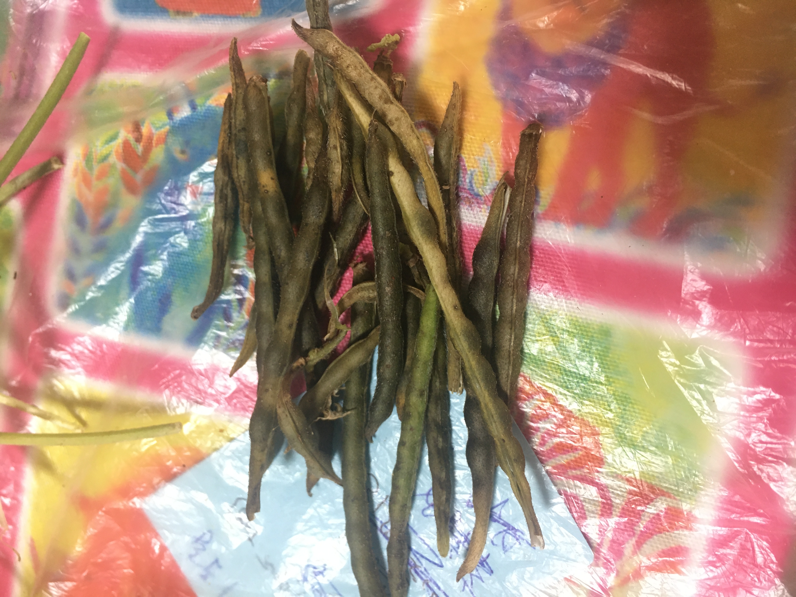
绿豆收成
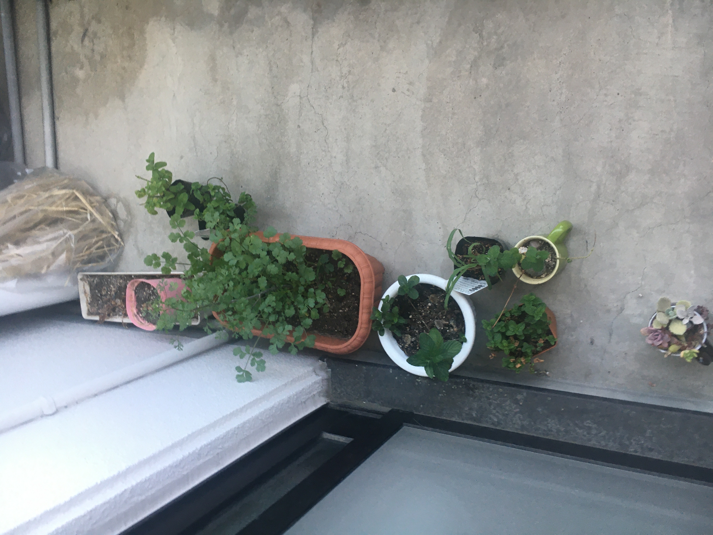
阳台的小植物
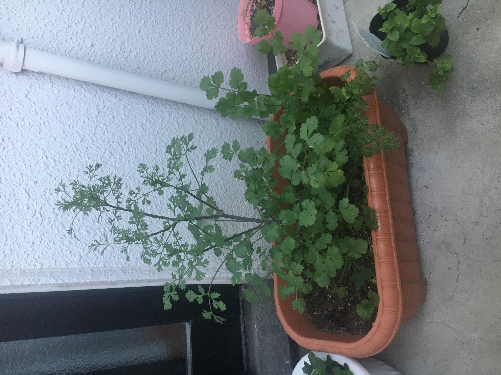
朋友送的不知道什么东西，里面有野花野草。
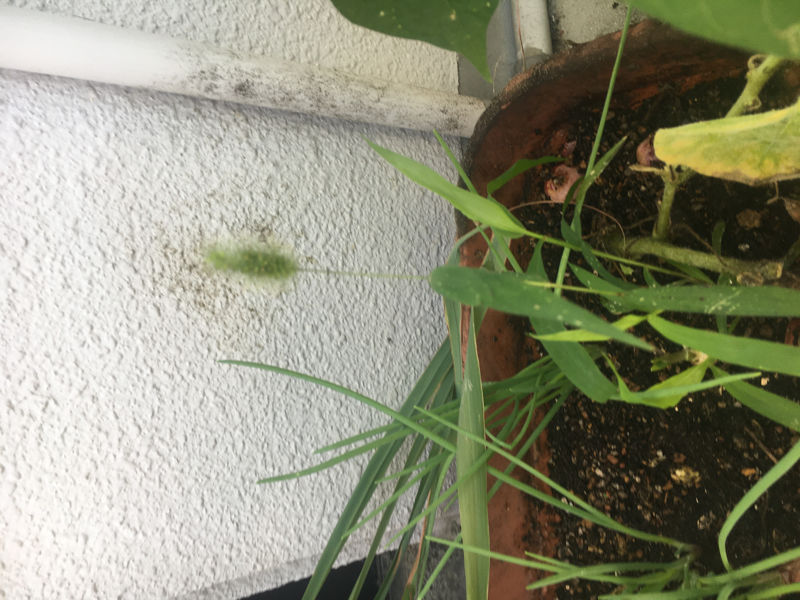
野草
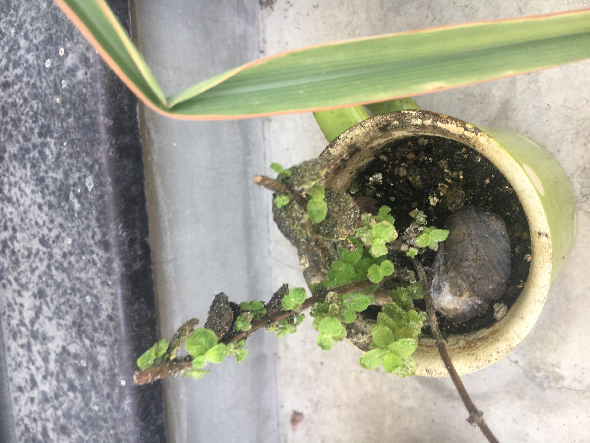
薄荷
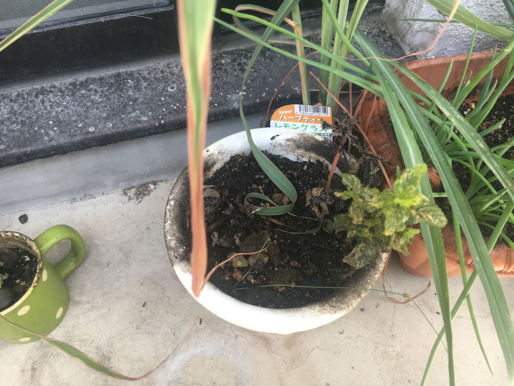
这也是薄荷。
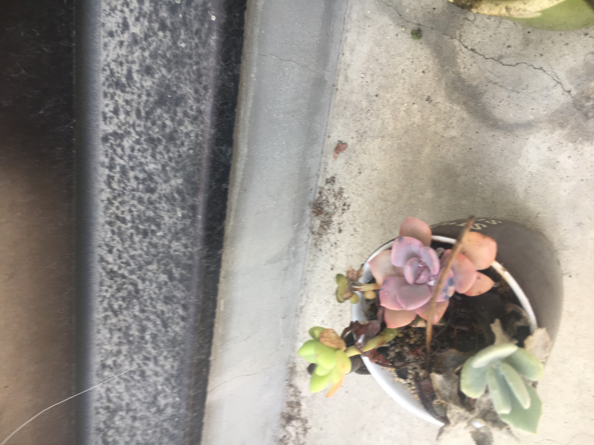
别人送的多肉，有年冬天冻死了。
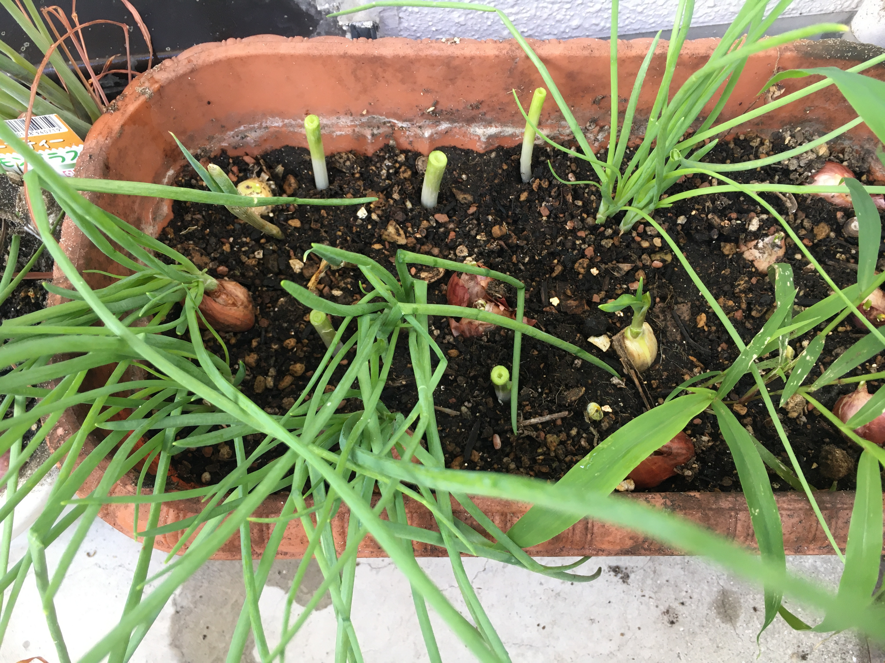
种葱是最容易的，我后来种了很多葱。我把超市买回来的葱，根部切出来放进泥土，有段时间种了很多很多葱，不过没施肥，泥土缺乏营养，后来就不行了。
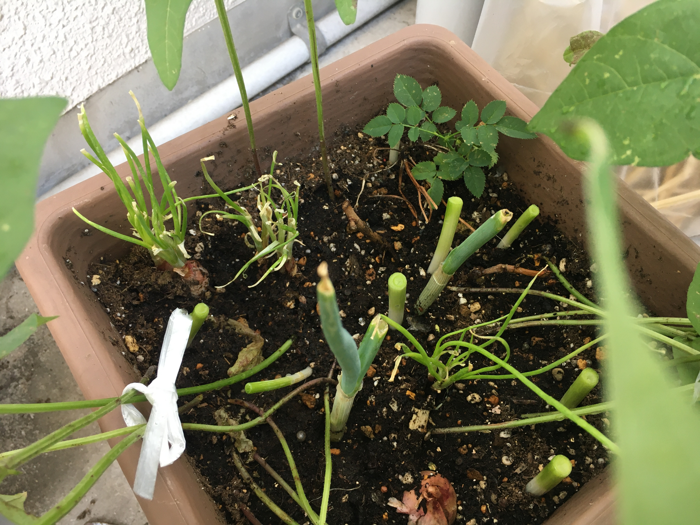
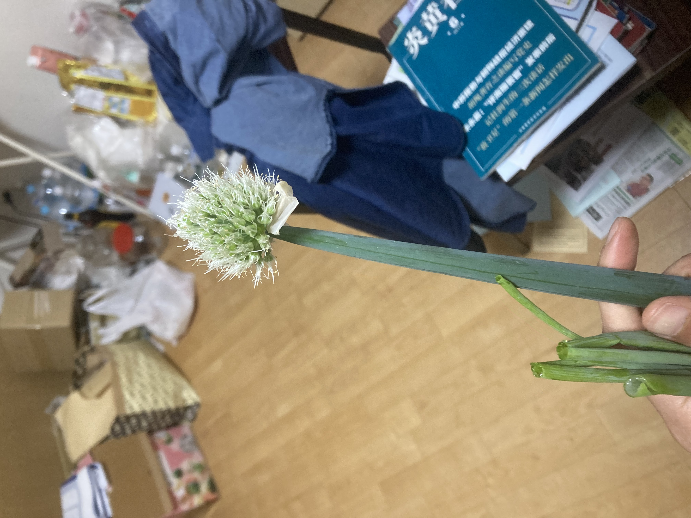
知道这是什么花吗？是葱花。
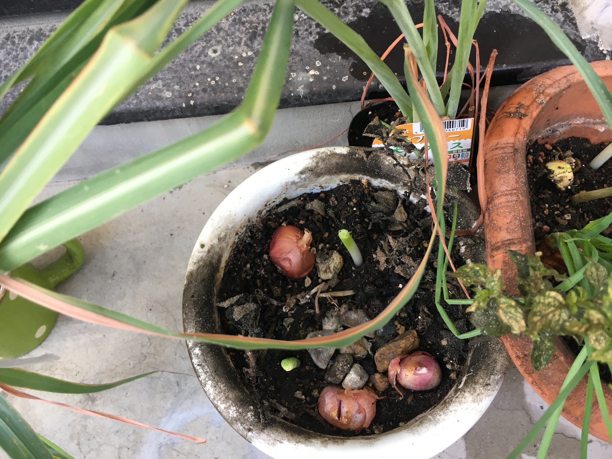
我后来直接什么能种的都放进去。这是红葱头。
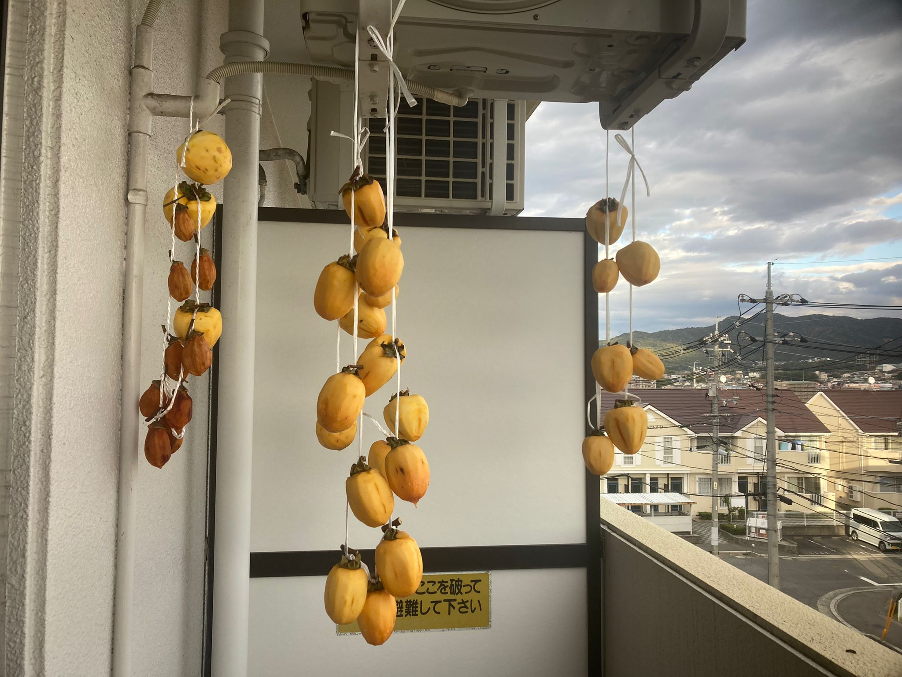
有一年（2021还是2022），我晒了很多柿子。其实之前也吃过别人晒的柿子，但没想过自己晒，嫌麻烦。事缘有次农家卖已经串起来的柿子，自己只需要削皮及挂起来就可以。由于很方便我就买了。试过一次之后觉得好玩，我的能量就来，不嫌麻烦，自己买绳子串。我又一次经历第一步推动力的重要性。

下一章